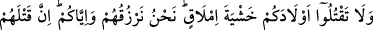
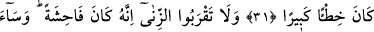
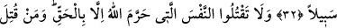
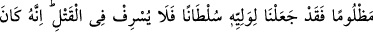
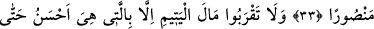
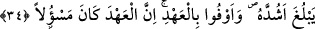

VERİLEN SÖZ
SORUMLULUK GEREKTİRİR
31. Geçim endişesi ile çocuklarınızın canına kıymayın. Biz, onların da sizin de
rızkınızı veririz. Onları öldürmek gerçekten büyük bir suçtur.
32. Zinâya yaklaşmayın. Şüphesiz o, bir hayâsızlıktır ve çok kötü bir yoldur.
33. Haklı bir sebep olmadıkça Allah’ın muhterem kıldığı cana kıymayın. Bir kimse
zulmen öldürülürse, onun velîsine (hakkını alması için) yetki verdik. Ancak bu velî
de kısasta ileri gitmesin. Zâten (kendisine bu yetki verilmekle) o, alacağını almıştır.
34. Yetimin malına, rüşdüne erinceye kadar, ancak en güzel bir niyetle yaklaşın.
Verdiğiniz sözü de yerine getirin. Çünkü verilen söz, sorumluluğu gerektirir.
Ey Araplar! “Geçim endişesi ile” fakirlik korkusuyla ya da fakirlik korkusu
olmaksızın “çocuklarınızın canına kıymayın.” Araplar Câhiliyye döneminde fakirlik
korkusuyla erkek çocuklarını öldürür, kızlarını da diri diri toprağa gömerlerdi. Allah
onlara bunu yasakladı ve onlara rızıklarını vereceğini garanti vererek şöyle buyurdu:
“Biz, onların da sizin de rızkınızı veririz.” Yoksa bizden başkası vermez. O hâlde
onların rızkı için endişelenmeyin. O kime can verirse nân/ekmek de verir.
Sa‘dî (k.s.) şöyle der:
Bir efendi ki bir köleyi satın alır, onun ihtiyaçlarını görür,
Nasıl kulu yaratan onun ihtiyaçlarını görmez?
Sende Cenâb-ı Hakk’a îtimâd yoktur,
Kölenin efendisine olan îtimadı kadar.
Herim, Üveys Karanî’ye “Nerede olmamı emredersin?” diye sordu. Üveys Şam
tarafına işâret etti. Herim: “Orada geçim nasıl?” diye sordu. Üveys: “Yuh olsun bu
kalblere! Onlara şüphe karışmış, nasihat de fayda etmiyor!” dedi.
“Onları öldürmek gerçekten büyük bir suçtur.” Allah’ın binâsı yıkıldığı ve nesli yok